건축산업기사 (2017-03-05 기출문제)
1과목: 건축계획
1. 공장 녹지계획의 효용성과 가장 거리가 먼 것은?
- 근로자의 피로경감
- 상품의 이미지 향상
- 제품의 유출입 원활
- 재해파급의 완충적 기능
(정답률: 67%)

2. 상점 내 진열장 배치계획에서 가장 우선적으로 고려하여야 할 사항은?
- 동선의 흐름
- 조명의 밝기
- 천장의 높이
- 바닥면의 질감
(정답률: 88%)
3. 다음 설명에 알맞은 사무소 건축의 코어 유형은?
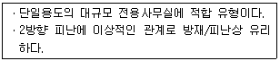
- 외코어형
- 편단코어형
- 양단코어형
- 중앙코어형
(정답률: 86%)
4. 초등학교 저학년에 가장 알맞은 학교 운영방식은?
- 플래툰형(P형)
- 종합교실형(U형)
- 교과교실형(V형)
- 일반교실, 특별교실형(U+V형)
(정답률: 87%)
5. 다음 설명에 알맞은 공장건축의 레이아웃 형식은?
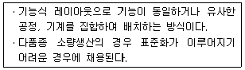
- 혼성식 레이아웃
- 고정식 레이아웃
- 공정중심의 레이아웃
- 제품중심의 레이아웃
(정답률: 80%)
6. 아파트 평면형식 중 중복도형에 관한 설명으로 옳지 않은 것은?
- 채광과 통풍이 용이하다.
- 대지에 대한 이용도가 높다.
- 프라이버시가 나쁘고 시끄럽다.
- 세대의 향을 동일하게 할 수 없다.
(정답률: 76%)
7. 다음과 같은 조건에서 요구되는 침실의 최소 바닥 면적은?
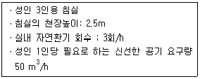
- 10m2
- 15m2
- 20m2
- 30m2
(정답률: 71%)
8. 학교건축의 교사(校舍) 배치형식 중 분산병렬형에 관한 설명으로 옳은 것은?
- 소규모 대지에 적용이 용이하다.
- 화재 및 비상시 피난에 불리하다.
- 구조계획이 복잡하고 규격형의 이용이 불가능하다.
- 일조, 통풍 등 교실의 환경조건을 균등하게 할 수 있다.
(정답률: 75%)
9. 백화점 계획에 관한 설명으로 옳지 않은 것은?
- 출입구는 모퉁이를 피하도록 한다.
- 매장은 동일층에서 가능한 레벨차를 두지 않는 것이 바람직하다.
- 에스컬레이터는 일반적으로 승객수송의 70-80%를 분담하도록 계획한다.
- 매장의 배치 유형은 매장 면적의 이용률이 가장 높은 사행 배치가 주로 사용된다.
(정답률: 72%)
10. 사무소 건축에서 유효율(rentable ratio)의 의미 하는 것은?
- 연면적과 대지면적의 비
- 임대면적과 연면적의 비
- 업무공간과 공용공간의 면적비
- 기준층의 바닥면적과 연면적의 비
(정답률: 75%)
11. 탑상형(Tower Type) 공동주택에 관한 설명으로 옳지 않은 것은?
- 원형, ㅁ형, +자형 등이 있다.
- 각 세대에 시각적인 개방감을 준다.
- 각 세대의 거주 조건이나 환경이 균등하게 제공된다.
- 도심지 및 단지 내의 랜드마크로서의 역할이 가능하다.
(정답률: 80%)
12. 상점의 매장 및 정면구성에 요구되는 AIDMA 법칙의 내용에 속하지 않는 것은?
- Design
- Action
- Interest
- Attention
(정답률: 81%)
13. 주택의 부엌과 계획 시 가장 중요하게 고려해야할 사항은?
- 조명배치
- 작업동선
- 색채조화
- 수납공간
(정답률: 87%)
14. 주거단지 내 동선계획에 관한 설명으로 옳지 않은 것은?
- 보행자 동선 중 목적동선은 최단거리로 한다.
- 보행자가 차도를 걷거나 횡단하기 쉽게 계획한다.
- 근린주구 단위 내부로 차량 통과교통을 발생 시키지 않는다.
- 차량 동선은 긴급차량 동선의 확보와 소음 대책을 고려한다.
(정답률: 78%)
15. 사무소 건축에 있어서 사무실의 크기를 결정하는 가장 중요한 요소는?
- 방문자의 수
- 사무원의 수
- 사무소의 층수
- 사무실의 위치
(정답률: 81%)
16. 다음의 근린생활권 중 규모가 가장 작은 것은?
- 인보구
- 근린분구
- 근린지구
- 근린주구
(정답률: 86%)
17. 공간의 레이아웃(lay-out)과 가장 밀접한 관계를 가지고 있는 것은?
- 재료계획
- 동선계획
- 설비계획
- 색채계획
(정답률: 85%)
18. 단독주택 부엌의 작업대 배치 유형에 관한 설명으로 옳지 않은 것은?
- ㄱ자형은 식사실과 함께 구성할 경우에 적합하다.
- 병렬형은 작업 시 몸을 앞뒤로 바꾸어야 하는 불편이 있다.
- 일렬형은 설비기구가 많은 경우에 동선이 길어지는 경향이 있으므로 소규모 주택에 적합하다.
- ㄷ자형은 평면계획상 외부로 통하는 출입구의 설치가 용이하나 작업동선이 긴 단점이 있다.
(정답률: 74%)
19. 사무소 건축의 엘리베이터 관한 설명으로 옳지 않은 것은?
- 외래자에게 직접 잘 알려질 수 있는 위치에 배치한다.
- 승객의 층별 대기시간은 평균 운전간격 이하가 되게 한다.
- 피난을 고려하여 두 곳 이상으로 분산하여 배치하는 것이 바람직하다.
- 초고층, 대규모 빌딩인 경우는 서비스 그룹을 분할(죠닝)하는 것을 검토한다.
(정답률: 77%)
20. 단독주택 현관의 위치 결정에 가장 주된 영향을 끼치는 것은?
- 대지의 크기
- 주택의 층수
- 도로와의 관계
- 주차장의 크기
(정답률: 84%)
2과목: 건축시공
21. 과거공사의 실적자료, 통계자료 및 물가지수 등을 참고하여 공사비를 추정하는 방법으로 복잡한 건물이라도 짧은 시간에 쉽게 산출할 수 있는 이점이 있는 것은?
- 분할적산
- 명세적산
- 개산적산
- 계약적산
(정답률: 63%)
22. 다음 중 열가소성 수지에 해당하는 것은?
- 페놀수지
- 요소수지
- 폴리에스테르수지
- 염화비닐수지
(정답률: 67%)
23. 공정관리 기법인 PERT와 비교한 CPM에 관한 설명으로 옳지 않은 것은?
- 공기단축이 목적이다.
- 경험이 있는 반복작업이 대상이다.
- 일정계산은 Activity 중심으로 이루어진다.
- 작업여유는 Float이다.
(정답률: 47%)
24. AE제를 사용한 콘크리트에 관한 설명으로 옳지 않은 것은?
- 동결용해저항성이 증가한다.
- 내마모성이 증가한다.
- 블리딩 및 재료분리가 감소한다.
- 철근과 콘크리트의 부착강도가 증가한다.
(정답률: 57%)
25. 조적조에서 내력벽 상부에 테두리보를 설치하는 가장 큰 이유는?
- 내력벽의 상부 마무리를 깨끗이 하기 위해서
- 벽에 개구부를 설치하기 위해서
- 분산된 벽체를 일체화하기 위해서
- 철근의 배근을 용이하게 하기 위해서
(정답률: 69%)
26. 건축공사용 재료의 할증율을 나타낸 것 중 옳지 않은 것은?
- 목재(각재) : 5%
- 단열재 : 10%
- 이형철근 : 3%
- 유리 : 3%
(정답률: 62%)
27. 그림과 같은 모래질 흙의 줄기초파기에서 파낸 흙을 6톤 트럭으로 운반하려고 할 때 필요한 트럭의 대수로 옳은 것은? (단, 흙의 부피증가 25%로 하며 파낸 모래질 흙의 단위중량은 1.8t/m2이다.)
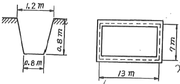
- 10대
- 12대
- 15대
- 18대
(정답률: 61%)
28. 철근피복에 관한 설명으로 옳은 것은?
- 철근을 피복하는 목적은 철근콘크리트 구조의 내구성 및 내화성을 유지하기 위해서이다.
- 보의 피복두께는 보의 주근의 중심에서 콘크리트 표면까지의 거리를 말한다.
- 기둥의 피복두께는 기둥주근의 중심에서 콘크리트 표면까지의 거리를 말한다.
- 과다한 피복두께는 부재의 구조적인 성능을 증가시켜 사용수명을 크게 늘릴 수 있다.
(정답률: 72%)
29. 다음 중 콘크리트용 깬자갈(crushed stone)에 관한 설명으로 옳지 않은 것은?
- 시멘트 페이스트와 부착성능이 낮다.
- 깬자갈을 사용한 콘크리트는 동일한 워커빌리티의 보통 콘크리트보다 단위수량이 일반적으로 10% 정도 많이 요구된다.
- 강자갈과 다른 점은 각진 모양과 거친 표면조직을 들 수 있다.
- 깬자갈의 원석은 안산암, 화강암 등이 있다.
(정답률: 58%)
30. 철골공사에 쓰이는 고력 볼트의 조임에 관한 설명으로 옳지 않은 것은?
- 고력볼트의 조임은 1차 조임, 금매김, 본조임 순으로 한다.
- 조임 순서는 기둥부재는 아래에서 위로, 보부재는 이음부 외축에서 중앙으로 조임을 실시한다.
- 볼트의 머리 밑과 너트 밑에 와셔틀 1장씩 끼우고, 너트를 회전시킨다.
- 너트회전법은 본조임 완료 후 모든 볼트에 대해 1차 조임 후에 표시한 금매김에 의해 너트 회전량을 육안으로 검사한다.
(정답률: 57%)
31. 미장공사와 관련된 용어에 관한 설명으로 옳지 않은 것은?
- 고름질 : 마감두께가 두꺼울 때 혹은 요철이 심할 때 초벌바름 위에 발라 붙여주는 것
- 바탕처리 : 요철 또는 변형이 심한 개소를 고르게 손질바름하여 마감 두께가 균등하게 되도록 조정하는 것.
- 덧먹임 : 균열의 틈새, 구멍등에 반죽된 재료를 밀어 넣어 때워주는 것.
- 결합재 : 화학약품으로 소량 사용하는 AE제, 감수제 등의 재료
(정답률: 60%)
32. 방수성 높은 모르타르로 방수층을 만들어 지하실의 내방수나 소규모인 지붕방수 등과 같은 비교적 경미한 방수공사에 활용하는 공법은?
- 아스팔트 방수공법
- 실링 방수공법
- 시멘트액체 방수공법
- 도막 방수공법
(정답률: 63%)
33. 가구식 구조물의 횡력에 대한 보강법으로 가장 적합한 것은?
- 통재 기둥을 설치한다.
- 가새를 유효하게 많이 설치한다.
- 샛기둥을 줄인다.
- 부재의 단면을 작게 한다.
(정답률: 71%)
34. 건설 VE(Value Engineering) 기법에 관한 설명으로 옳은 것은?
- 기업 전략의 일환으로 수행되는 VE 활동은 최고 경영자에서 생산현장에 이르기까지 폭 넓게 전개될 필요는 없다.
- VE 활동을 위한 이익의 확대는 타 기업의 경쟁 없이 이루어지며, 적은 투자로 큰 성과를 얻을 수 있다.
- 생산설비 자제는 VE의 대상이 될 수 없다.
- 설계 단계에서 대부분의 공사비가 결정되는 거널 공사의 특성에 따라 빠른 시점에서의 VE 적용은 필요 없다.
(정답률: 67%)
35. 도급계약 제도에 관한 설명으로 옳지 않은 것은?
- 일식도급 - 공사전체를 다수의 업체에게 발주하는 방식
- 지명경쟁입찰 - 특정업체를 지명하여 입찰경쟁에 참여 시키는 방식
- 공개경쟁입찰 - 모든 업체에게 공고하여 공개적으로 경쟁입찰하는 방식
- 특명입찰 - 특정의 단일업체를 선정하여 발주하는 방식
(정답률: 76%)
36. 강화유리에 관한 설명으로 옳지 않은 것은?
- 내 충격강도가 보통판유리보다 약 3~5배 정도 높다.
- 휨강도는 보통판유리보다 약 6배 정도 크다.
- 현장가공과 절단이 되지 않는다.
- 파손된 경우 파편이 날카로워 안전상 출입구문이나 창유리 등에는 사용하지 않는다.
(정답률: 76%)
37. 지반의 지내력 같이 큰 것부터 작은 순으로 옳게 나타낸 것은?
- 연암반 - 자갈 - 모래섞인 점토 - 점토
- 연암반 - 자갈 - 점토 - 모래섞인 점토
- 자갈 - 연암반 - 점토 - 모래섞인 점토
- 자갈 - 연암반 - 모래섞인 점토 - 점토
(정답률: 71%)
38. 그림과 같은 수평보기 규준틀에서 A부재의 명칭은?
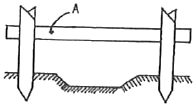
- 띠장
- 규준대
- 규준점
- 규준팔뚝
(정답률: 75%)
39. KS F 4002에 규정된 콘크리트 기본 블록의 크기가 아닌 것은?
- 390×190×190
- 390×190×150
- 390×190×120
- 390×190×100
(정답률: 59%)
40. 굳지않은 콘크리트의 공기량 변화에 관한 설명으로 옳지 않은 것은?
- AE제의 혼입량이 증가하면 공기량이 증가한다.
- 시멘트 분말도가 크면 공기량은 증가한다.
- 단위시멘트량이 증가하면 공기량이 감소한다.
- 슬럼프가 커지면 공기량이 증가한다.
(정답률: 43%)
3과목: 건축구조
41. 그림과 같은 등분포하중을 받는 단순보의 최대 처짐은?
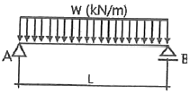
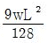
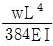
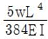
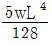
(정답률: 67%)
42. 압축을 받는 D22 이형철근의 기본정착길이를 구하면? (단, 경량콘크리트계수 = 1, fck = 25MPa, fy = 400Mpa)
- 378.4㎜
- 440㎜
- 500.3㎜
- 520㎜
(정답률: 59%)
43. 다음 그림과 같은 단순보에서 C점의 전단력을 구하면?
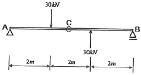
- 0
- -10kN
- -20KN
- -30kN
(정답률: 36%)
44. 균형철근비에 대한 정의로 옳은 것은?
- 압축측 콘크리트가 극한변형률 εu= 0.003에 도달할 때 인장측 철근이 항복변형률에 도달하는 철근비
- 인장측 콘크리트가 극한변형률 εu= 0.003에 도달할 때 압축측 철근이 최대변형률에 도달하는 철근비
- 압축측 콘크리트가 극한변형률 εu= 0.0⑤에 도달할 때 압축측 철근이 최대변형률에 도달하는 철근비
- 인장측 콘크리트가 극한변형률 εu= 0.0⑤에 도달할 때 압축측 철근이 최대변형률에 도달하는 철근비
(정답률: 45%)
45. 단면 bw×d = 400×550mm인 직사각형보에 인장철근이 5-D19 배근되어 있을 때 인장 철근비는? (단, D19 1개의 단면적은 287mm2이다.)
- 0.0065
- 0.0060
- 0.0017
- 0.0012
(정답률: 42%)
46. 단면2차모멘트를 적용하여 구하는 것이 아닌 것은?
- 단면계수와 단면2차반경의 계산
- 단면의 도심계산
- 휨응력도
- 처짐량계산
(정답률: 45%)
47. 철근의 간격에 대한 설명으로 옳지 않은 것은?
- 동일 평면에서 평행한 철근 사이의 수평 순간격은 25㎜ 이상이다.
- 상단과 하단으로 2단 이상 배근된 경우, 상하 철근의 순간격은 25㎜ 이상이다.
- 동일평면에 평행하게 배근된 철근의 순간격은 사용된 굵은 골재의 최대 공칭지수의 1.5배 이상이다.
- 나선철근이 배근된 압축부재에서 축방향 철근의 순간격은 40㎜ 이상 또는 철근 공칭지름의 1.5배 이상이다.
(정답률: 39%)
48. 그림에서 AB 부재의 부재력은?
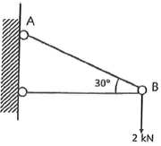
- -2kN
- +2kN
- -4kN
- +4kN
(정답률: 42%)
49. 철근콘크리트 단근보 설계에서 보의 균형철근비 pb = 0.02 일 때, 이 보의 최대철근비(pmax)는? (단, fy= 400MPa)
- 0.0102
- 0.0143
- 0.02⑤
- 0.0252
(정답률: 49%)
50. 과도한 처짐에 의해 손상되기 쉬운 비구조요소를 지지 또는 부착하지 않은 바닥구조의 활하중에 의한 순간 처짐의 한계는?
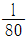
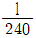
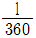
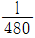
(정답률: 55%)
51. 직경이 40㎜인 강봉을 200kN의 인장력으로 잡아 당길 때 이 강봉의 가로 변형률(가력방향에 직각)을 구하면? (단, 이 강봉의 푸아송비는 1/4이고, 탄성계수는 20000MPa이다.)
- 0.00197
- 0.00398
- 0.0⑤92
- 0.00796
(정답률: 29%)
52. 그림과 같은 구조물의 부정정 차수는?
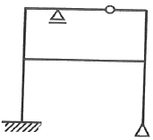
- 2차
- 3차
- 4차
- 5차
(정답률: 49%)
53. 다음 정정구조물에서 A점의 처짐을 구하는 식으로 옳은 것은?
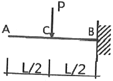
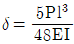
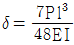
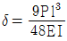
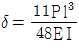
(정답률: 57%)
54. 연약지반에서 발생하는 부동침하의 원인으로 옳지 않은 것은?
- 부분적으로 증축했을 때
- 이질지반에 건물이 걸쳐 있을 때
- 지하수가 부분적으로 변화할 때
- 지내력을 같게 하기 위해 기초판 크기를 다르게 했을 때
(정답률: 66%)
55. 다음 그림과 같은 철근콘크리트의 보 설계에서 콘크리트에 의한 전단강도 Ve를 구하면? (단, fck = 24MPa, fy = 400Mpa, 경량 콘크리트 계수 λ = 1.0)
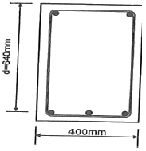
- 150kN
- 180kN
- 209kN
- 245kN
(정답률: 48%)
56. 건축구조기준에 의한 지진하중 산정 시지반종류와 호칭이 옳은 것은?
- SA : 보통암 지반
- SB: 연암 지반
- SC: 풍화암 지반
- SD : 단단한 토사 지반
(정답률: 54%)
57. 고럭볼트 집합의 구조적 장점 중 옳지 않은 것은?
- 강한 조임력으로 너트의 풀림이 생기지 않는다.
- 응력방향이 바뀌어도 힘의 흐름상 혼란이 일어나지 않는다.
- 응력집중이 적으므로 반복응력에 대해 강하다.
- 유효단면적당 응력이 크며, 피로강도가 작다.
(정답률: 58%)
58. 건축구조기준에 의한 용도별 등분포 활하중 값으로 적절한 것은?
- 도서관의 서고 : 6.0kN/m2
- 일반사무실 : 2.5kN/m2
- 학교의 교실 : 3.5kN/m2
- 백화점 1층 : 4.0kN/m2
(정답률: 45%)
59. 조적식 구조의 개구부에 관한 구조 기준 중 옳지 않은 것은?
- 각층의 대린벽으로 구획된 각 벽에 있어서 개구부 폭의 합계는 그 벽 길이의 3분의 2이하로 하여야한다.
- 하나의 층에 있어서의 개구부와 그 바로 윗층에 있는 개구부와의 수직거리는 600㎜ 이상으로 하여야 한다.
- 같은 층의 벽에 상하의 개구부가 분리되어 있는 경우 그 개구부 사이의 거리는 600㎜ 이상으로 하여야 한다.
- 폭이 1.8m를 넘는 개구부의 상부에는 철근콘크리트구조의 윗 인방을 설치하여야 한다.
(정답률: 39%)
60. 그림과 같은 구조물에서 고정단 휨모멘트(MD)로 옳은 것은?
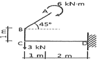
- -15.0kNㆍm
- -9.0kNㆍm
- -6.0kNㆍm
- -3.0kNㆍm
(정답률: 29%)
4과목: 건축설비
61. 결합통기관에 관한 설명으로 옳은 것은?
- 도피통기관과 슘통기관을 연결하는 통기관이다.
- 배수입상판과 통기입상관을 연결하는 통기관이다.
- 통기입상관과 배수횡지관을 연결하는 통기관이다.
- 환상통기관과 배수횡지관을 연결하는 통기관이다.
(정답률: 58%)
62. 침입외기량 산정 방법에 속하지 않는 것은?
- 인원수에 의한 방법
- 창 면적에 의한 방법
- 환기 횟수에 의한 방법
- 창문의 틈새 길이에 의한 방법
(정답률: 59%)
63. 중기난방의 방열기 트램에 속하지 않는 것은?
- U트랩
- 버킷트랩
- 폴로드트랩
- 벨로즈트랩
(정답률: 59%)
64. 배수트랩에 관한 설명으로 옳지 않은 것은?
- 유효봉수깊이가 너무 낮으면 봉수가 손실되기 쉽다.
- 유효봉수깊이가 일반적으로 50㎜ 이상, 100㎜ 이하이다.
- 유효봉수깊이가 너무 크면 유수의 저항이 증가되어 통수능력이 감소된다.
- 배수관 계통의 환기를 도모하여 환내를 청결하게 유지하는 역할이다.
(정답률: 60%)
65. 급탕배관 설계 시 주의해야 할 사항으로 옳지 않은 것은?
- 배관구배는 강제 순환 방식의 경우 1/200 정도가 적합하다.
- 하향 배관법에서 급탕관 및 반탕판은 모두 앞내가림 구배로 한다.
- 직관부가 긴 횡주관에서는 신축 이음을 강관인 경우 50m 마다 1개 설치한다.
- 상향 배관법에서 급탕 수평 주관은 앞올림 구배, 반탕판은 앞내림 구배로 한다.
(정답률: 43%)
66. 송풍온도를 일정하게 하고 송풍량을 변경해 부하변동에 대응하는 공기조화 방식은?
- 이중덕트 방식
- 멀티존 유닛방식
- 단일덕트 정풍량 방식
- 단일덕트 변풍량 방식
(정답률: 63%)
67. 저수조가 필요하고, 수전에서 압력변동이 크게 발생할 우려가 있는 급수방식은?
- 수도직결방식
- 고가탱크방식
- 펌프직송방식
- 압력탱크방식
(정답률: 61%)
68. 상당의기온도차에 관한 설명으로 옳지 않은 것은?
- 난방부하의 계산에는 적용하지 않는다.
- 건물의 방위와 계산시각에 따라 달라진다.
- 일사량이 클수록 상당의기온도차는 작아진다.
- 외벽 및 지붕의 구조체 종류에 따라 달라진다.
(정답률: 57%)
69. LPG에 관한 설명으로 옳지 않은 것은?
- 공기보다 무겁다.
- 액화석유가스를 말한다.
- 액화하면 용적은 1/250로 된다.
- 상암에서는 액체이지만 압력을 가하면 기화된다.
(정답률: 62%)
70. 4층 사무소 건물에서 옥내소화전이 1, 2층에는 6개씩 3, 4층에는 3개씩 설치되어 있다. 옥내소화전설비 수원의 저수량은 최소 얼마 이상이 되도록 하여야 하는가?(2021년 04월 01일 개정된 규정 적용됨)
- 20.8m3
- 10.4m3
- 5.2m3
- 2.6m3
(정답률: 52%)
71. 증기난방에서 응축수 환수를 위해 사용되는 장치는?
- 리턴콕
- 인젝터
- 증기트랩
- 플러시벨브
(정답률: 47%)
72. 다음 중 유량 조절을 할 수 없는 벨브는?
- 앵글 벨브
- 체크 벨브
- 글로브 벨브
- 버터플라이 벨브
(정답률: 57%)
73. 공기조화방식 중 전공기 방식에 속하지 않는 것은?
- 단일덕트 방식
- 이중덕트 방식
- 팬코일 유닛 방식
- 멀티즌 유닛 방식
(정답률: 73%)
74. 보일러의 출력 중 상용출력의 구성에 속하지 않는 것은?
- 난방부하
- 급탕부하
- 예열부하
- 배관부하
(정답률: 67%)
75. 축전지에 관한 설명으로 옳지 않은 것은?
- 연축전지의 공칭전압은 1.5[V/쉘]이다.
- 연축전지는 중량전 전압의 차이가 적다.
- 알칼리축전지의 공칭전압은 1.2[V/쉘]이다.
- 알칼리축전지는 과발전, 과전류에 대해 강하다.
(정답률: 50%)
76. 간선의 배선 방식 중 평행식에 관한 설명으로 옳은 것은?
- 공급 신뢰도가 낮아 중요 부하에 적용이 곤란하다.
- 나뭇가지식에 비해 배선이 단순하며, 설비비가 저렴하다.
- 용량이 큰 부하에 대하여는 단독의 간선으로 배선 할 수 없다.
- 사고발생 시 타부하에 파급효과를 최소한으로 억제할 수 있다.
(정답률: 47%)
77. 각종 광원에 관한 설명으로 옳지 않은 것은?
- 형광램프는 점등장치를 필요로 한다.
- 고압수은램프는 큰 광속과 긴 수명이 특징이다.
- 형광램프는 백열전구에 비해 효율이 낮으며 수명도 짧다.
- 나트륨램프는 연색성이 나쁘며 해안 도로 조명에 사용된다.
(정답률: 65%)
78. 다음 자동화재탐지설비의 감지기 중 열감지기에 속하지 않는 것은?
- 보상식
- 정온식
- 차등식
- 광전식
(정답률: 63%)
79. 간접가열식 급탕방법에 관한 설명으로 옳지 않은 것은?
- 직접가열식에 비해 열효율이 떨어진다.
- 급량용 보일러는 난방용 보일러와 겸용할 수 있다.
- 저장탱크에는 씨모스렛(theermostat) 설치하여 온도를 조절할 수 있다.
- 열원을 중기로 사용하는 경우에는 저장탱크에 스팀 사일랜서(stream silencer)를 설치하여야 한다.
(정답률: 41%)
80. 다음과 같이 구성되어 있는 벽체의 열관류율은? (단, 내표면 열전달률은 8W/m2ㆍK, 표면 열전달율은 20W/m2ㆍK이다.)
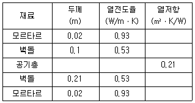
- 0.99W/m2ㆍK
- 1.18W/m2ㆍK
- 1.22W/m2ㆍK
- 1.28W/m2ㆍK
(정답률: 35%)
5과목: 건축관계법규
81. 다음 그림과 같은 단면을 가진 거실의 빈자리 높이는?
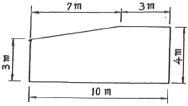
- 3.0m
- 3.60m
- 3.65m
- 4.0m
(정답률: 65%)
82. 건축법령상 용적률의 정의로 가장 알맞은 것은?
- 대지면적에 대한 연면적의 비율
- 연면적에 대한 건축면적의 비율
- 대지면적에 대한 건축면적의 비율
- 연면적에 대한 지상층 바닥면적의 비율
(정답률: 61%)
83. ( )안에 포함되지 않는 것은?
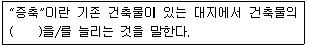
- 층수
- 높이
- 대지면적
- 건축면적
(정답률: 62%)
84. 기계식주차장에 설치하여야 하는 정류장의 확보기준으로 옳은 것은?
- 주차대수 20대를 초과하는 매 20대마다 1대분
- 주차대수 20대를 초과하는 매 30대마다 1대분
- 주차대수 30대를 초과하는 매 20대마다 1대분
- 주차대수 30대를 초과하는 매 30대마다 1대분
(정답률: 51%)
85. 일반상업지역안에서 건축할 수 있는 건축물은?
- 묘지관련시설
- 자원순환관련시설
- 자동차관련시설 중 폐차장
- 노유자시설 중 노인복지시설
(정답률: 63%)
86. 대지 및 건축물 관련 건축기준의 허용오차 범위로 옳지 않은 것은?
- 출구 너비 : 3% 이내
- 벽체 두께 : 3% 이내
- 바닥판 두께 : 3% 이내
- 건축선의 후퇴거리 : 3% 이내
(정답률: 60%)
87. 리모델링이 쉬운 구조의 공동주택 건축을 촉진하기 위하여 공동주택을 리모델링이 쉬운 구조로 할경우 100분의 120의 범위에서 완화하여 적용받을 수 없는 것은?
- 건축물의 건폐율
- 건축물의 용적률
- 건축물의 높이제한
- 일조 등의 확보를 위한 건축물의 높이제한
(정답률: 52%)
88. 다음의 시설물 중 설치하여야 하는 부설주차장의 최소 주차대수가 가장 많은 것은?
- 위락시설
- 판매시설
- 업무시설
- 제2종 근린생활시설
(정답률: 65%)
89. 급수, 배수, 환기, 난방 등의 건축설비를 설치하는 경우 건축기계설비기술사 또는 공조냉동기계 기술사의 협력을 받아야 하는 대상 건축물에 속하지 않는 것은?
- 아파트
- 기숙사로서 해당 용도에 사용되는 바닥면적의 합계가 2000m2인 건축물
- 판매시설로서 해당 용도에 사용되는 바닥면적의 합계가 2000m2인 건축물
- 의료시설로서 해당 용도에 사용되는 바닥면적의 합계가 2000m2인 건축물
(정답률: 54%)
90. 다음은 지하층과 피난층 사이의 개방공간 설치에 관한 기준이다. ( ) 안에 알맞은 것은?
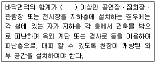
- 1000m2
- 2000m2
- 3000m2
- 4000m2
(정답률: 60%)
91. 지하식 또는 건축물식 노외주차장의 차로에 관한 기준 내용으로 옳지 않은 것은?
- 경사로의 노면은 거친 면으로 하여야 한다.
- 높이는 주차바닥면으로부터 2.3m 이상으로 하여야 한다.
- 경사로의 종단경사도는 곡선 부분에서는 17%를 초과하여서는 아니된다.
- 주차대수 규모가 50대 이상인 경우의 경사로는 너비 6m 이상인 2차로를 확보하거나 진입차로와 진출차로를 분리하여야 한다.
(정답률: 63%)
92. 다음 중 6층 이상의 거실면적의 합계가 10000m2 인 경우 설치하여야 하는 승용승강기의 최소 대수가 가장 많은 것은? (단, 15인승 승용승강기의 경우)
- 의료시설
- 숙박시설
- 노유자시설
- 교육연구시설
(정답률: 72%)
93. 다음의 정의에 알맞은 주택의 종류는?
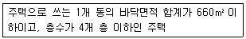
- 연립주택
- 다중주택
- 다세대주택
- 다가구주택
(정답률: 54%)
94. 도시ㆍ군계획 수립 대상지역의 일부에 대하여 토지ㆍ이용을 합리화하고 그 기능을 증진시키며 미관을 개선하고 양호한 환경을 확보하여, 그 지역을 체계적ㆍ계획적으로 관리하기 위하여 수립하는 도시ㆍ군관리계획은?
- 광역도시계획
- 지구단위계획
- 국토종합계획
- 도시ㆍ군기본계획
(정답률: 67%)
95. 피난안전구역의 설치에 관한 기준 내용으로 옳지 않은 것은?
- 피난안전구역의 높이는 2.1m 이상일 것
- 비상용 승강기는 피난 안전구역에서 승하차 할 수 있는 구조로 설치할 것
- 건축물의 내부에서 피난안전구역으로 통하는 계단은 피난계단의 구조로 설치할 것
- 관리사무소 또는 방재센터 등과 긴급연락이 가능한 정보 및 통신시설을 설치할 것
(정답률: 66%)
96. 다음은 건축선에 따른 건축제한에 관한 기준 내용이다. ( ) 안에 알맞은 것은?
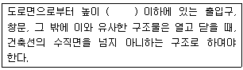
- 1.5m
- 3m
- 4.5m
- 6m
(정답률: 67%)
97. 배연설비의 설치에 관한 기준 내용으로 옳지 않은 것은?
- 배연창의 유효면적 최소 2m2 이상으로 할 것
- 배연구는 예비전원에 의하여 열수 있도록 할 것
- 관련 규정에 의하여 건축물에 방화구획이 설치된 경우에는 그 구획마다 1개소 이상의 배연창을 설치할 것
- 배연구는 연기감지기 또는 열감지기에 의하여 자동으로 열 수 있는 구조로 하되, 손으로도 열고 닫을 수 있도록 할 것
(정답률: 49%)
98. 문화 및 집회시설 중 공연장의 개별관람석 출구에 관한 기준 내용으로 옳지 않은 것은? (단 개별관람석의 바닥면적 300m2 이상인 경우)
- 관람석별로 2개소 이상 설치할 것
- 각 출구의 유효너비는 1.5m 이상일 것
- 바깥쪽으로의 출구로 쓰이는 문은 안 여닫이로 할 것
- 개별관람석 출구의 유효너비 합계는 개별 관람석의 바닥면적 100m2마다 0.6m의 비율로 산정한 너비 이상으로 할 것
(정답률: 71%)
99. 피난용승강기의 승강장 및 승강로의 구조에 관한 기준 내용으로 옳지 않은 것은?
- 승강장은 각 층의 내부와 연결되지 않도록 할 것
- 승강로는 해당 건축물의 다른 부분과 내화구조로 구획 할 것
- 승강장의 바닥면적은 피난용승강기 1대에 대하여 6m2 이상으로 할 것
- 각 층으로부터 피난층까지 이르는 승강로 단일구조로 연결하여 설치할 것
(정답률: 60%)
100. 주차전용건축물은 건축물의 연면적 중 주차장으로 사용되는 부분의 비율이 최소 얼마 이상이어야 하는가? (단, 주차장 외의 용도로 사용되는 부분이 판매 시설인 경우)
- 60%
- 70%
- 80%
- 95%
(정답률: 51%)